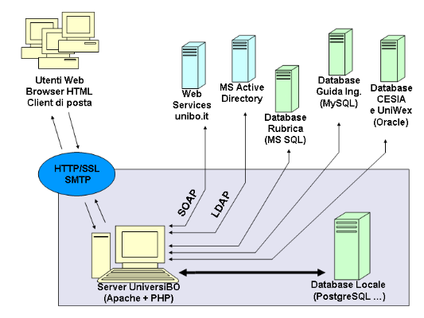
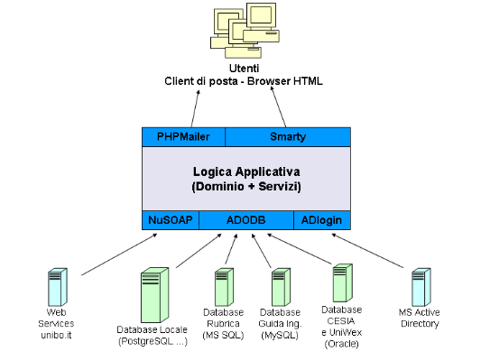

Il progetto parte senza nessun supporto finanziario, vincolo per tutte le tecnologie utilizzate è quindi il costo zero.
Si è valutata come piattaforma ideale per lo sviluppo della logica
applicativa PHP4, rispetto a Java/jsp:
- maggiore esperienza dell'attuale team di sviluppo
- maggiore numero si componenti riutilizzabili disponibili in rete
- performance migliori (risparmio sulle risorse hardware)
Nonstante i seguenti fattori a sfavore:
- non è attualmente nei piani didattici della facoltà in cui parte
il progetto
- peggiore supporto all'OOP
Il sistema pur rimanendo portabile su tutte le piattaforme su cui PHP è funzionante, è legato a molti sistemi presenti nella rete di Ateneo con una fitta rete di interazioni.
Si vuole interagire con tutte le strutture pre-esistenti integrandole e senza creare replicazioni inutili (si veda obbiettivi).
Nella seguente immagine è riportato lo schema nel caso particolare della prima implementazione che riguarda la facoltà di ingegneria, ed in gran parte valida per tutto l'ateneo.

Dallo schema sopra si può facilmente intuire l'elevata complessità delle interazioni che influiscono con il sistema, si mettono in risalto le problematiche principali che sono state affrontate:
Per la persistenza dei dati locale ci si appoggia su database relazionale
SQL, con l'idea introdurre uno strato di astrazione dallo specifico
database utilizzato tramite la ormai collaudata classe ADODB,
la creazione dello schema sarà principalmente sviluppata per PostgreSQL
e in seguito per MySQL ed altri database.
I Log dell'applicazione sono registrati direttamente sul filesystem del webserver.
Per l'accesso ai web services è stato testato con successo il package NuSOAP
Per lo strato di presentazione, si sono considerati vari template engine per
PHP per generare l'output dell'applicazione , e di è scelto di utilizzare
Smarty per la sua ampia diffusione e affidabilità.
L'output dovrà essere XHTML compatibile ed in linea
con le norme di accessibilità del W3C-WAI, obbiettivo è creare
un sito compatibile almeno con lo standard AA.
Per l'invio di e-mail viene utilizzato PHPMailer, che permette il collegamento diretto ad un server SMTP senza altri componenti intermediari dipendenti dal sistema operativo.
Una grossa problematica già riscontrata al momento della precedente
versione del progetto riguarda l'accesso al sistema di autenticazione MS
Active Directory considerato necessario dalle strutture dell'ateneo.
Il sistema AD è di tipo proprietario e dispone di un'interfaccia esterna
che si è verificata non compatibile con lo standard LDAP.
La soluzione del problema richiede lo sviluppo di un componente ad hoc per scavalcare
il problema.

PHPMailer - http://phpmailer.sourceforge.net/
ADOdb - http://php.weblogs.com/ADODB
NuSOAP - http://dietrich.ganx4.com/nusoap/index.php
Smarty - http://smarty.php.net/